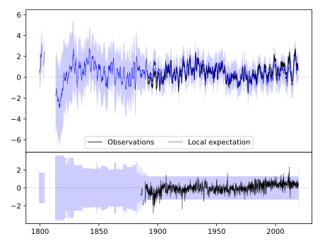
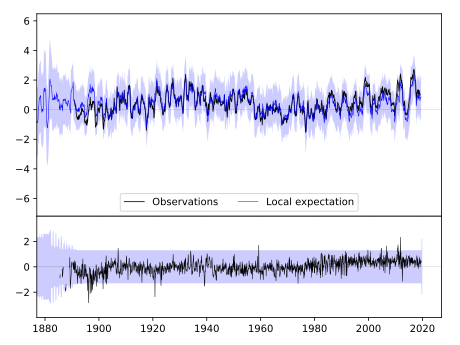
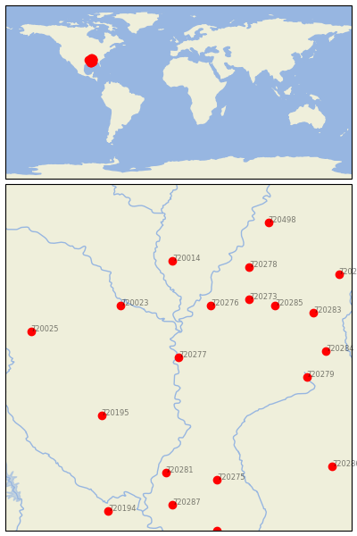

GREENVILLE [USA]


| Neighbour | Name | Country | Distance | Lon/Lat | Years |
|---|
| 720277 | GREENVILLE | USA | 0 | -91.1, 33.4 | 1884-2019 |
| 720276 | CLARKSDALE | USA | 100 | -90.6, 34.2 | 1885-2019 |
| 720023 | PINE BLUFF | USA | 121 | -92.0, 34.2 | 1883-2019 |
| 720273 | BATESVILLE 2 SW | USA | 142 | -90.0, 34.3 | 1882-2019 |
| 720195 | CALHOUN RSCH STN | USA | 150 | -92.3, 32.5 | 1888-2019 |
| 720285 | WATER VALLEY | USA | 164 | -89.6, 34.2 | 1889-2019 |
| 720014 | BRINKLEY | USA | 167 | -91.2, 34.9 | 1883-2019 |
| 720278 | HERNANDO | USA | 185 | -90.0, 34.8 | 1882-2019 |
| 720279 | LOUISVILLE | USA | 188 | -89.1, 33.1 | 1888-2019 |
| 720281 | NATCHEZ | USA | 201 | -91.3, 31.6 | 1799-2019 |
| 720283 | PONTOTOC EXP STN | USA | 209 | -89.0, 34.1 | 1889-2019 |
| 720284 | STATE UNIV | USA | 213 | -88.8, 33.5 | 1886-2019 |
| 720025 | PRESCOTT 2 NNW | USA | 217 | -93.4, 33.8 | 1882-2019 |
| 720275 | BROOKHAVEN CITY | USA | 218 | -90.5, 31.5 | 1892-2019 |
| 720287 | WOODVILLE 4 ESE | USA | 255 | -91.2, 31.1 | 1892-2019 |
| 720498 | COVINGTON 3 SW | USA | 266 | -89.7, 35.5 | 1883-2019 |
| 720274 | BOONEVILLE | USA | 271 | -88.6, 34.7 | 1889-2019 |
| 720194 | BUNKIE | USA | 286 | -92.2, 31.0 | 1882-2019 |
| 720286 | WAYNESBORO 2 W | USA | 293 | -88.7, 31.7 | 1882-2019 |
| 720192 | AMITE | USA | 305 | -90.5, 30.7 | 1883-2019 |